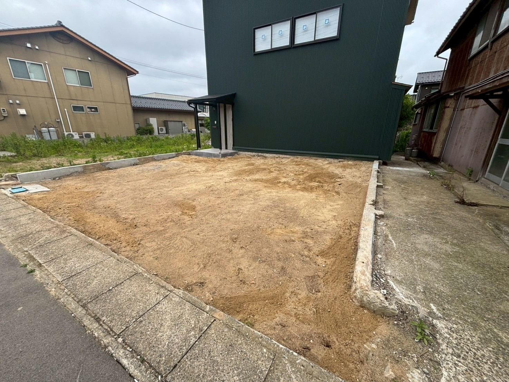

「解体したいけれど、お金は出したくない」方へ。解体・足場・不動産を一社で行う義翔工業が、 持ち出しを抑える出口を一緒に考えます。遠方にお住まいの方も、写真とお電話でご相談いただけます。

空き家や実家をどうするか。多くの方が最後に行き着くのが、 「解体すれば現金が出ていくだけで、更地だけが残ってしまう」という不安です。
私たち義翔工業は、解体工事だけの会社ではありません。 解体・足場・不動産を一社で手がけるからこそ、「まず壊す」の前に、 あなたの土地と建物にとって一番損の少ない出口を、一緒に考えることができます。
老朽化していても、立地や土地そのものに価値があれば、建物を残したまま売却できる場合があります。解体費をかけずに手放せる可能性があります。
建物が残っていることで、かえって土地が売りにくくなるケースがあります。更地にすることで買い手がつきやすくなることがあります。
売却で得られる代金から解体費をまかなえれば、実質的な持ち出しを抑えられます。「現金を用意しなくても片づけられた」——そんな形を目指します。
「福岡に住んでいて、実家まで通えない」——そんな方が多くいらっしゃいます。 義翔工業なら、写真とお電話だけで概算のご相談が可能です。現地の確認は私たちが伺います。
解体を不動産会社に頼むと、解体の本職ではないため、あいだに業者が入り中間マージンが発生しがちです。 義翔工業は解体・足場・不動産を自社で行うため、その分の無駄を抑えられます。
もちろん大丈夫です。概算のお見積りだけのご相談も歓迎します。
建物・土地の両面から、現実的なところを正直にお伝えします。「負の財産」で終わらせず、活かせる道を一緒に探します。
ありません。ご判断はお客様のペースで。急かすことはいたしません。
宅地建物取引業者免許：山口県知事（1）第3880号／建設業許可：山口県知事許可（般-6）第22343号
FREE CONSULTATION
お電話・お問い合わせフォームから、いつでもご相談いただけます。